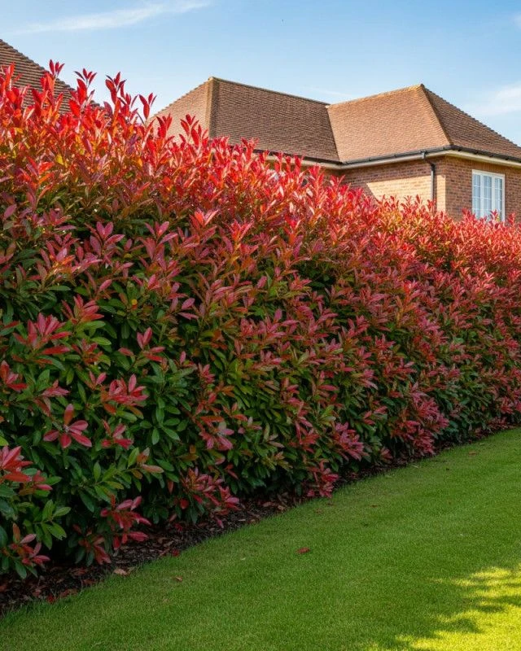

Cerco vivo
Photinia
Photinia × fraseri
Consultar precio
La Photinia se distingue por sus brotes nuevos de un rojo encendido que decoran el cerco durante gran parte del año. El contraste con las hojas maduras verde oscuro brillante crea una paleta única, sin necesidad de flores. Es sin dudas uno de los cercos más decorativos y aspiracionales para jardines modernos.
AlturaHasta 4 m
CrecimientoMedio
FollajePerenne
ExposiciónSol pleno a media sombra
Usos recomendados
Cerco ornamental, cerco medio, fondo decorativo
Riego
Regular
Cuidados
Poda ligera para estimular nuevos brotes rojos.